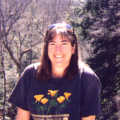
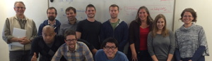

 I am a Professor in the Department of Philosophy at UC Davis; in addition, I am affiliated with the Science and Technology Studies (STS) Program, the John Muir Institute of the Environment, and the UC Davis Interdisciplinary Animal Studies Research Group.
I am an Editor of the peer-reviewed open-access online journal Philosophy and Theory in Biology. I am also on the Executive Committee and Council for the AAAS Pacific Division, an Elected Member-at-Large for the Section on History and Philosophy of Science of the AAAS, and the Senior Co-Chair of the PSA Women's Caucus. I periodically blog for the New APPS group blog.

<< Griesemer/Millstein philosophy of biology lab.

<< u-POW - Undergraduate Philosophically Oriented Women.
Contacting me:
By snail mail:
Professor Roberta L. Millstein
Department of Philosophy
University of California, Davis
One Shields Avenue
Davis, CA 95616-8673
By email: RLMillstein@ucdavis.edu
By phone: 530-554-1398 (Skype #; will go to voice mail)
Research
My research is in the philosophy of science and the history & philosophy of biology as well as environmental ethics.
My research interests include the way that general topics in the philosophy of science, such as causation, mechanisms, probability, and determinism, illuminate and are illuminated by topics in evolutionary biology and ecology. I am also particularly interested in intersections between evolutionary biology, ecology, and environmental issues.
Recent work examines the concepts of 'fitness,' 'population', and 'random drift'; race and sexual selection; and connections between population genetics and ecology. I am currently working on projects exploring Patricia Gowaty's adaptively flexible sex role model, on the importance of interconnectedness in Aldo Leopold's Land Ethic, and on the way that laboratory experiments, field experiments, and natural experiments can jointly inform us about ecological and evolutionary interactions.
I am a co-editor of Mechanism and Causality in Biology and Economics with Hsiang-Ke Chao and Szu-Ting Chen (see book review by Anya Plutynski). I have published in journals such as Philosophy of Science, Biology and Philosophy, The British Journal for the Philosophy of Science, Studies in History and Philosophy of Biological and Biomedical Sciences, Journal of the History of Biology, Ethics, Policy & Environment and Biological Theory.
Papers online
Videos
- "Thinking about populations and races in time" at UCSC, April 2014 (see minutes 44-58)
- "Genetically Modified Food: Feeding the World or Fouling the World" at UT-Austin, April 2014
Other pages
Teaching
2015-2016
Fall Quarter
Winter Quarter
- Introduction to Philosophy of Biology (Phi 38)
- Philosophy of Science (Phi 210)
Spring Quarter
- Not teaching
Past quarters
Useful/Interesting Links:
Pages I've created:
- History & Philosophy of Biology Resources
- Energy
- Environmental Ethics
- Biotechnology
- So you want me to write you a letter of recommendation
Other useful stuff:
- Google Scholar
- PhilPapers
- PhilSci Archive - Preprints of philosophy of science articles
- Stanford Encyclopedia of Philosophy
- Tips on Writing a Philosophy Paper
- Applying to Ph.D. Programs in Philosophy - Contains detailed and useful advice on writing samples, statement of purpose, etc.
- Philosophy of Biology Graduate Programs - An unranked list of Ph.D. and terminal M.A. programs that have strengths in philosophy of biology. See also PhilWiki for wikis for other areas in philosophy or to start your own philosophy graduate program wiki.